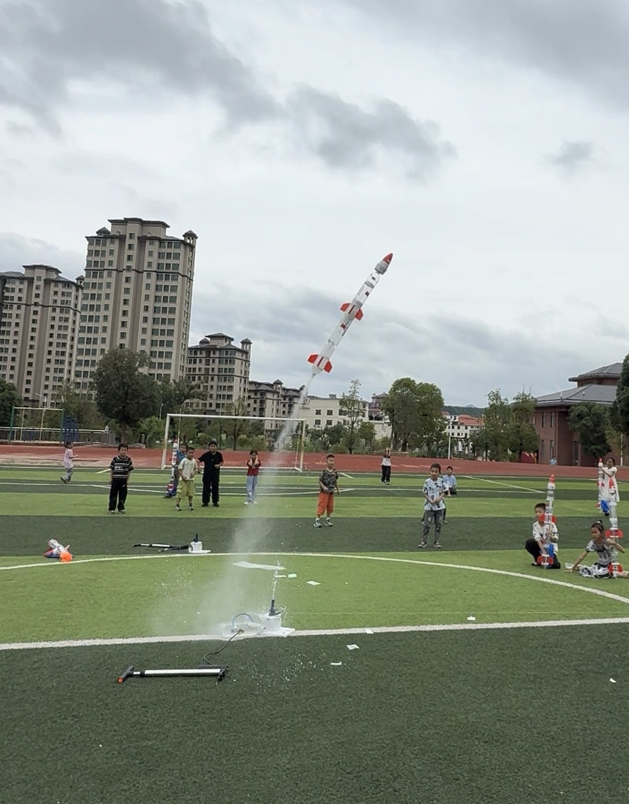
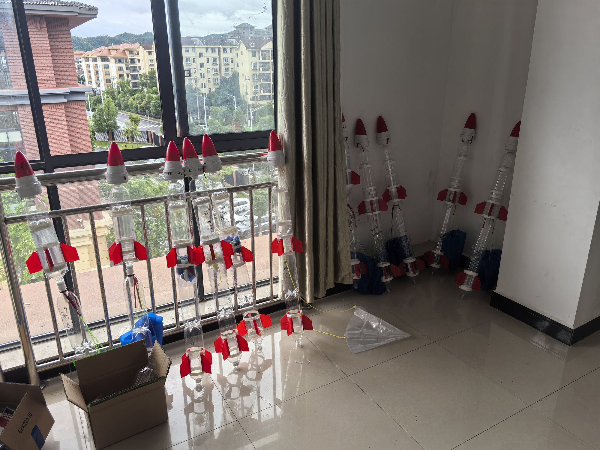
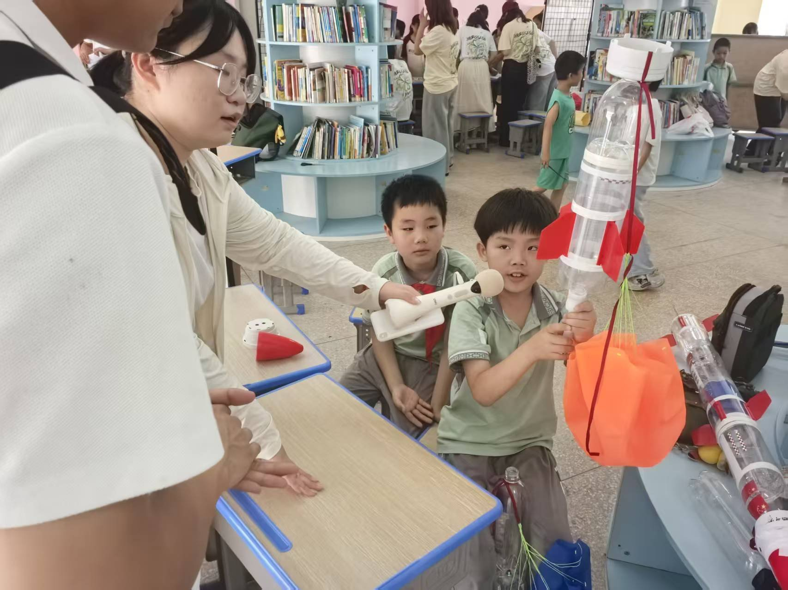
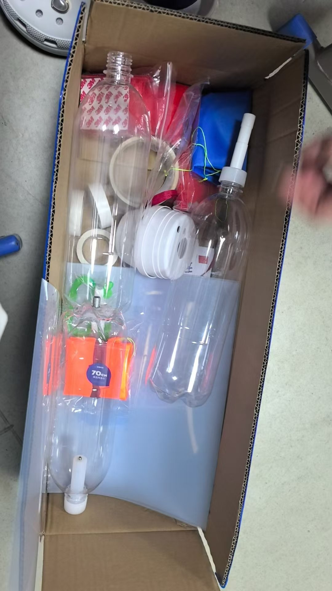
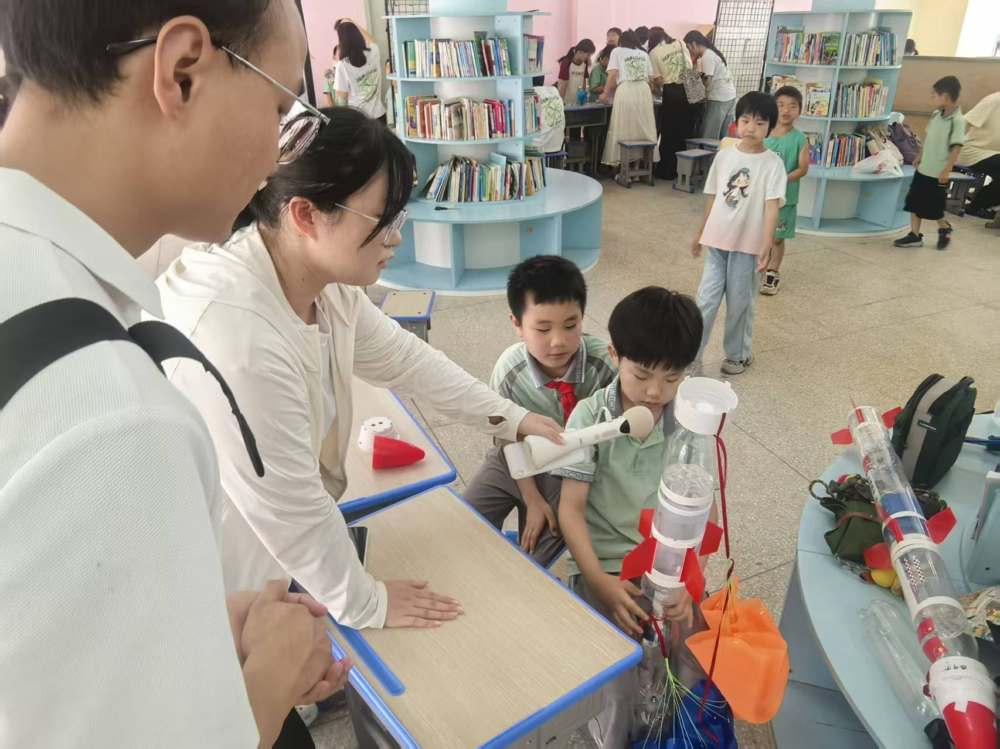
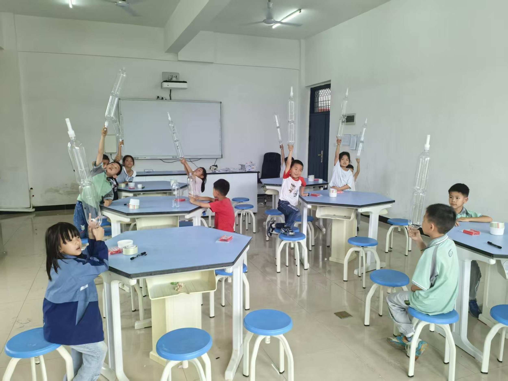

Two-Stage Water Rocket & Its Simulation Platform

Significance
How do you teach abstract mechanics to young children across a language and sector boundary? We designed a bilingual (Chinese–English) STEM unit and delivered it as a cross-regional service-learning project — Hong Kong university students teaching primary-school children in mainland China.
Transdisciplinary physics × engineering × AI × pedagogy
Transectoral university ↔ school ↔ community
Transcultural Hong Kong ↔ Jiangxi, bilingual
Objectives
Knowledge
Explain launch principles, pressure vs. air pressure, action–reaction, acceleration and air resistance.
Ability
Practise hypothesis → test → optimise; variable control; data recording; engineering design.
Transdisciplinary
Couple AI simulation with hands-on experiment, transferable to other STEM topics.
In the field


Approach & Methodology
A custom AI simulation platform acts as a pre-launch “digital twin”: students sweep water volume, air pressure and nozzle diameter to predict the optimal launch before the physical test — reducing cost and safety risk while grounding intuition in theory.




Key Findings & Implications

References & Acknowledgement
- Zacharia, Z. C., & Anderson, O. R. (2003). Interactive computer-based simulation prior to a laboratory inquiry-based experiment on students’ conceptual understanding of physics. Am. J. Phys., 71(6). doi:10.1119/1.1566427
- Wieman, C., Adams, W. K., & Perkins, K. K. (2008). PhET: Simulations That Enhance Learning. Science, 322(5902). doi:10.1126/science.1161948
- van Uum, M. S. J., Verhoeff, R. P., & Peeters, M. (2016). Inquiry-based science education: a pedagogical framework for primary school teachers. Int. J. Sci. Educ., 38(3). doi:10.1080/09500693.2016.1147660
- Beier, M. E., Kim, M. H., & Saterbak, A. (2018). The effect of authentic project-based learning on attitudes and career aspirations in STEM. J. Res. Sci. Teach., 56(1). doi:10.1002/tea.21465
- Capraro, R. M., Capraro, M. M., & Morgan, J. R. (2013). STEM Project-Based Learning. Springer. doi:10.1007/978-94-6209-143-6
- Bilén, S. G., Wheeler, T., & Bock, R. G. (2015). Applying 3D printing to model rocketry to enhance learning in undergraduate engineering design. ASEE Annual Conf. doi:10.18260/p.24448